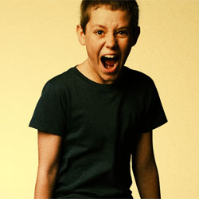

| Home | The Gallaghers | Main Charcters | About The Series |
|
Carl Gallagher
Carl Francis Gallagher (Ethan Cutkosky) is the second-youngest Gallagher child (14). He shares a room with older brothers Lip and Ian, who try to keep their more adult interests from him. Carl is often in trouble at school for attacking other students. In his early years, he displays several psychopathic tendencies such as mutilating his toys and killing stray animals, although this behavior seems to be less prevalent as he ages, and he begins to show concern for Frank. |